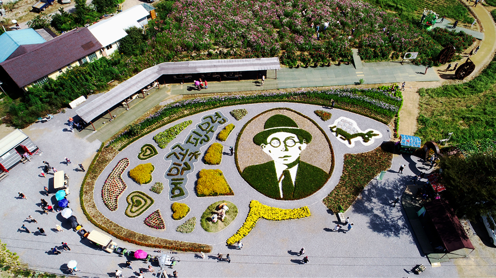
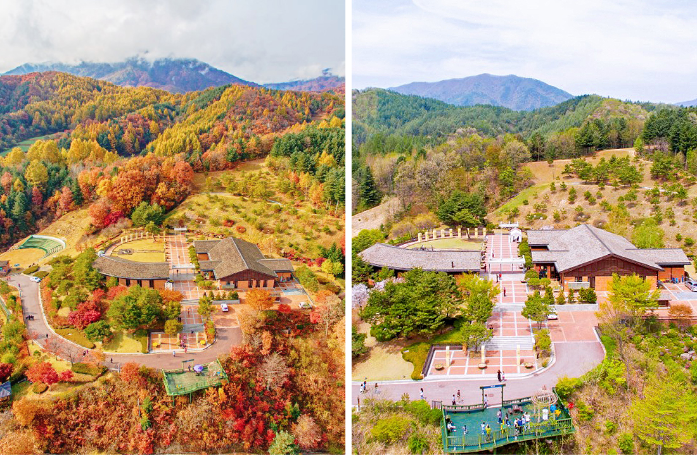
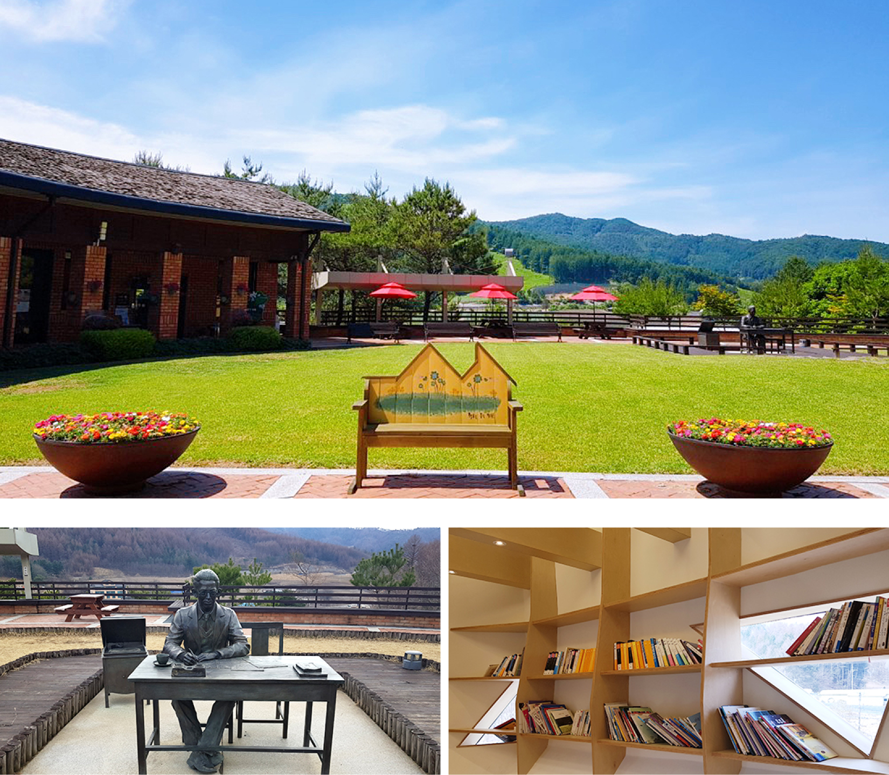

강원도 평창군 봉평면은 가산 이효석 선생의 고향이자 메밀꽃 필 무렵의 배경이 된 곳이다. 그래서인지 이효석의 작품이 평창 하면 메밀밭을 떠올리게 되는 가장 큰 이유가 아닐까 싶다.
이효석은 우리나라 단편문학의 대표작인 [메밀꽃 필 무렵]의 작가로 많이 알려져 있으며 누구나 이 작품을 학창 시절 접해봤을 것이라고 생각한다. 뛰어난 구조와 상징 등 소설의 요소를 잘 갖춘 현대문학으로 평가받고 있다.
이효석은 일제강점기에 활동을 시작하였는데 [돈], [수탉] 등의 향토색이 짙은 작품을 발표하며 1936년 우리에게 많이 알려진 [메밀꽃 필 무렵]을 발표했다. 이효석의 문체는 세련된 언어와 풍부한 어휘 그리고 시적은 분위기가 특징이며 시적인 정서의 예술성으로 사랑을 받았다. 하지만 그는 결핵성 뇌막염으로 36세의 젊은 나이에 세상을 떠났다.
이효석문화예술촌은 이효석문학관과 효석달빛언덕으로 크게 분류되는데, 이효석문학관은 그의 생애와 작품세계를 한눈에 볼 수 있으며 문학 전시실과 다양한 문학 체험이 가능한 문학교실, 학예 연구실 등으로 구성되어 있다.
효석달빛언덕은 재현된 이효석 생가, 근대 문학 체험관 등 다양한 공간으로 구성되어 있어 지루하지 않게 중간중간 많은 볼거리와 즐길 거리를 제공하며 자유롭게 산책하며 이효석에 대해 더 가까이 체험해 볼 수 있도록 조성된 체험관이자 공원이다.
문학관에서 이효석과 그의 작품에 대해 좀 더 알아볼 수 있었다면 이제 달빛 언덕을 거닐며 그의 삶을 좀 더 가까이서 느껴볼 차례이다. 달빛언덕은 이효석 생가 주변에 구성된 공간으로 [메밀꽃 필 무렵]에 등장하는 달빛의 상징성을 바탕으로 조성되어 있다.